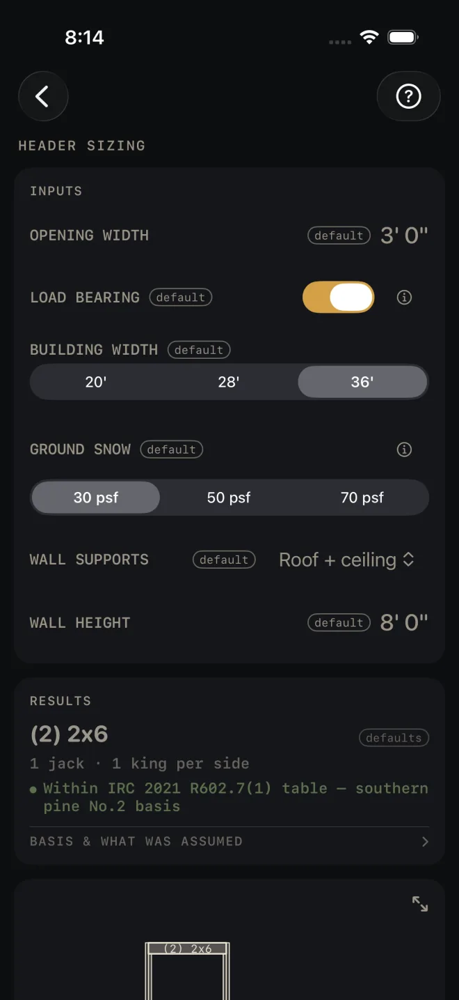
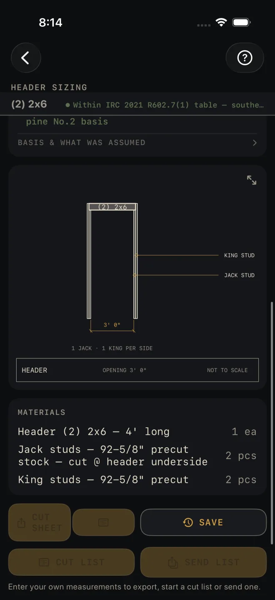

Header Sizing
What it's for
Sizing the header over a door or window opening. You give it the opening width and, for a bearing wall, the building width, the snow load and what the wall carries. It gives you the header size, the jack and king studs each side, a drawing of the opening and a material list. For a bearing wall the size is read from the IRC header span table the screen names. An opening too wide for the table is flagged for an engineer.
Step by step
This example uses the numbers the screen opens with.

1 2 3 4 5- OPENING WIDTH — the rough opening, framing to framing, not the door or window unit. The example is 3' 0".
- LOAD BEARING — on if the wall carries floor, ceiling or roof. Off for a partition that carries only itself. Turning it off hides the next three rows.
- BUILDING WIDTH — the width of the building. Pick from the three the table lists.
- GROUND SNOW — the ground snow load for your area, in pounds per square foot, from your county's snow load map.
- WALL SUPPORTS — what sits on this wall. Tap and pick: roof and ceiling only, or one or two floors as well. For a floor, choose center-bearing if the floor joists also rest on a wall or beam in the middle of the building, or clear-span if they cross it in one piece.
- WALL HEIGHT — sets the length of the jack and king stud stock on the cut list. It does not change the header size.
- Read the answer: (2) 2x6, 1 jack · 1 king per side.
Reading the results

4 5 6 7- The headline is the header: the number of plies in brackets, then the lumber size.
- The line under it is the jack studs and king studs on each side of the opening.
- The check. On a bearing wall a green line names the table the size came from and the species it is based on. On a partition it reads Non-bearing — sized conservatively in-app. ENGINEER REQUIRED — OPENING EXCEEDS TABLE means no lumber header in the table covers that opening under that load. The headline changes to say an engineered header is needed, and there is no material list. Narrow OPENING WIDTH, or have the header engineered.
- BASIS & WHAT WAS ASSUMED — tap it. On a bearing wall it states the conditions the size was read under: exterior bearing wall, the building width, snow load and loading you picked, the species the spans are based on, and how the jack studs were counted. It says interior girders use a different table. On a partition it lists the app's own size steps and what the code permits instead. Both end with the code edition and a reminder to check your local amendments.
- The drawing shows the opening with its header, jacks and kings. Pinch to zoom, drag to pan, double-tap to reset. The expand button opens it full screen. See Reading the drawing.
- MATERIALS — one header, and the jack and king studs for both sides.
- CUT SHEET, the list icon at its right end, CUT LIST and SEND LIST stay dim until you change at least one input. SAVE stays lit, but while every input is still a default a tap only answers Enter your job's numbers first and saves nothing. CUT SHEET makes a PDF, the list icon at its right end shares the material list only, SAVE keeps the result in History, CUT LIST puts the pieces on the Lock Screen with the header length and the stud stock length, and SEND LIST sends a checkable list to another phone.
Header Sizing, and the cut sheet, cut list, send list and History buttons, are part of Pro, a
one-time purchase. See Free and Pro.
Common mistakes
- Entering the unit size. OPENING WIDTH is the rough opening.
- Leaving the snow load at the first choice. The header size depends on it. Get the real figure for your area.
- Reading it as an interior girder size. The bearing table is for an exterior bearing wall. The basis row says so, and says interior girders come from a different table.
- Forgetting the floors above. WALL SUPPORTS starts at roof and ceiling only. A floor on the wall changes the header.
Related
- Rough Opening
- Framing — sizes the headers for a whole wall
- Beam Sizing — for openings and loads past the header table
- Reading the drawing
- Cut sheets and 1:1 templates
- Cut list on the Lock Screen
- Saving and History